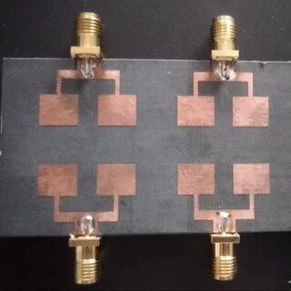
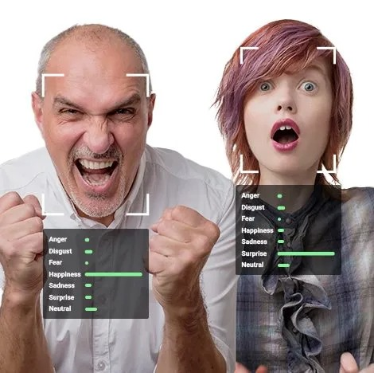
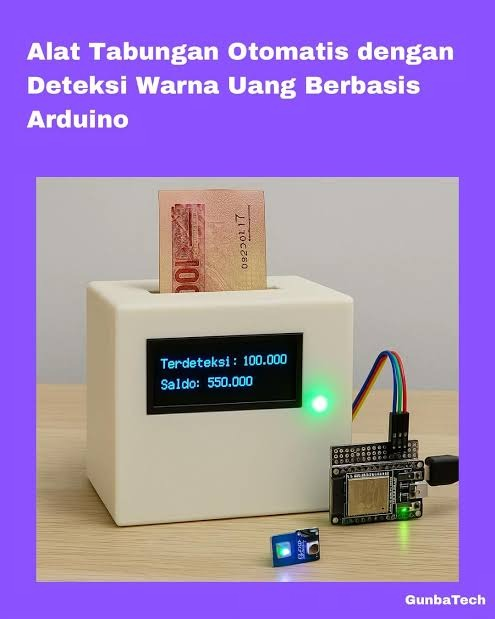
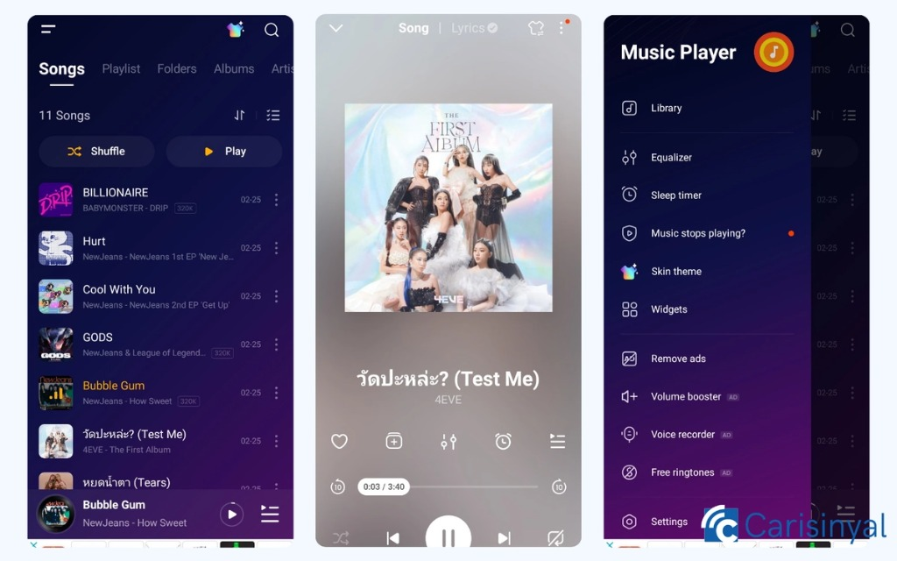
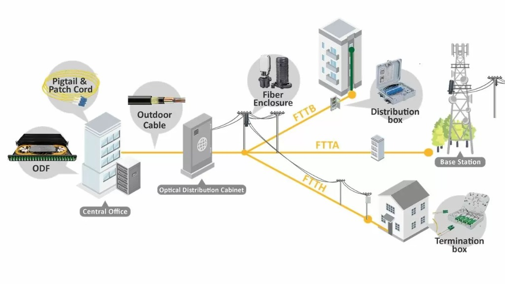
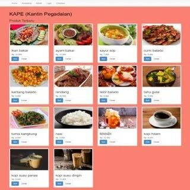
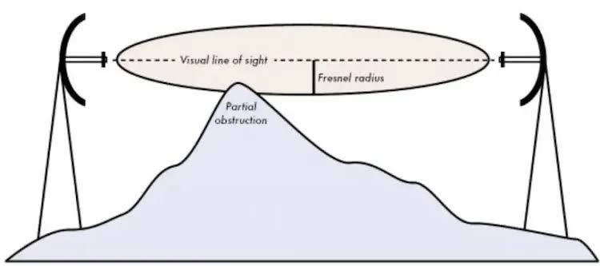

Hello, I'm Zaki Alfajary.
Lulusan D4 Broadband Multimedia, Politeknik Negeri Jakarta (IPK 3,66/4,00). Spesialisasi dalam perancangan antena mikrostrip 2x2 MIMO, transmisi fiber optic, radio link, sistem IoT, serta rekayasa perangkat lunak web dan mobile.

Profil & Latar Belakang Rekayasa
Lulusan D4 Broadband Multimedia, Politeknik Negeri Jakarta dengan predikat kelulusan memuaskan (IPK 3,66 / 4,00). Memiliki fondasi teknis yang kuat di bidang teknologi informasi, jaringan telekomunikasi, perancangan antena mikrostrip array MIMO, transmisi serat optik (fiber optic), analisis radio link microwave, serta rekayasa IoT.
Memiliki pengalaman magang profesional di Divisi Teknologi Informasi Perum LKBN ANTARA dalam perancangan modul Customer Relationship Management (CRM) dan Sales Force perusahaan menggunakan arsitektur PHP, Nginx, MariaDB, dan Docker.
Streamlined digital & engineering experiences.
Dokumentasi nyata proyek riset antena telekomunikasi, transmisi jaringan optik & radio link, otomatisasi IoT, serta aplikasi web dan mobile.

Rancang Bangun Antena Mikrostrip Array 2×2 MIMO Wideband
Merancang antena array 2x2 MIMO untuk aplikasi FWA LTE (1800-2100 MHz) dengan modifikasi Z-Slot, slit, dan slit-DGS pada ground plane.

Emotion Detection Web Application
Mengembangkan aplikasi web machine learning untuk inferensi deteksi usia, emosi, dan ras secara real-time terintegrasi Google Cloud Platform.

Digital Savings System (Sensor Warna + Sheets)
Sistem tabungan digital berbasis mikrokontroler dengan sensor warna TCS3200 untuk mendeteksi pecahan uang dan upload otomatis ke Google Sheets.

Flutter Music Player Application
Aplikasi pemutar musik mobile dengan Flutter dan native Android Kotlin, mendukung antarmuka dinamis dan pemutaran audio di latar belakang.

Desain Jaringan Fiber Optic — Margonda, Depok
Perencanaan jaringan kabel fiber optic, penyusunan mapping jalur rute, kalkulasi optical link margin, serta penyusunan dokumen BoQ dan RPL teknis.

Smart Gardening System berbasis ESP32
Sistem penyiraman tanaman otomatis berbasis ESP32, relay solenoid valve, sensor kelembaban, serta notifikasi real-time bot Telegram.

Canteen Ordering Web Application
Aplikasi pemesanan kantin dengan arsitektur frontend dan backend, katalog menu interaktif, serta panel admin pemantau pesanan real-time.

Desain Radio Link LOS & Analisis Perencanaan
Perencanaan transmisi radio link Line of Sight (Jakarta – Depok), analisis clearance zona Fresnel, evaluasi link margin dan path loss.
Pengalaman Kerja Profesional
Pengalaman kerja riil di lembaga kantor berita nasional Republik Indonesia.
PERUM LKBN ANTARA
Staf Magang — Departemen Pengembangan TI, Divisi Teknologi Informasi
September 2025 – Desember 2025 • Jakarta Pusat
- Terlibat dalam perancangan dan implementasi Customer Relationship Management (CRM) internal berbasis web untuk mendukung kegiatan operasional dan tim sales force perusahaan.
- Mengembangkan modul invoice, verifikasi pembayaran, manajemen data admin/pegawai, dan integrasi notifikasi pelanggan otomatis.
- Mengimplementasikan teknologi PHP, Nginx, MariaDB, dan Docker dalam lingkungan deployment terstandarisasi.
- Berkoordinasi aktif dengan tim pengembang senior dalam analisis kebutuhan fungsional dan penyelesaian sistem tepat waktu.

Need more info?
I got you.
Berikut adalah domain keahlian teknis dan layanan engineering yang saya kuasai:
RF & Antenna Design
Perancangan dan simulasi antena mikrostrip array MIMO (1800–2100 MHz), modifikasi Z-Slot, slit-DGS, evaluasi S-parameter, dan ECC menggunakan CST Studio Suite.
Network & Fiber Optic
Perencanaan jaringan kabel fiber optic, kalkulasi optical link budget, penyusunan BoQ & RPL, serta analisis Line of Sight (LOS) dan zona Fresnel gelombang mikro.
IoT & Embedded Systems
Pengembangan prototipe mikrokontroler (Arduino, ESP32), sensor optik/warna, aktuator solenoid relay, serta integrasi data real-time ke Google Spreadsheet & Telegram API.
Fullstack Web Engineering
Pembangunan aplikasi web responsif dan modular (PHP, JavaScript, HTML, CSS, MariaDB, Docker, Nginx) dengan modul manajemen invoice, otentikasi, dan panel admin.
Mobile Application (Flutter)
Pembuatan antarmuka aplikasi mobile multiplatform berbasis Flutter dan Dart, penanganan background audio playback, dan integrasi native Kotlin di Android.
Machine Learning & Cloud
Pelatihan model machine learning berbasis Python dan Google Colab, serta integrasi inferensi model kecerdasan buatan ke lingkungan Google Cloud Platform (GCP).
Pendidikan Formal
Politeknik Negeri Jakarta
D4 Broadband Multimedia • Teknik Elektro
Menyelesaikan pendidikan sarjana terapan dengan fokus pada antena telekomunikasi MIMO, fiber optic, radio link LOS, pemrosesan sinyal digital, serta software engineering.
LDK FIKRI Politeknik Negeri Jakarta
Kepala Biro PSDM (Pengembangan Sumber Daya Muslim) • 2025 – 2026
Memimpin koordinasi program mentoring anggota, menjabat Ketua Pelaksana HIQMAH kurban, Project Officer Lentera, dan Vice PO PNJ Cool.
Sertifikasi Kompetensi
Belajar Dasar Pemrograman Web
HTML, CSS, semantic structure, responsive layouts, Flexbox, media queries, dan web standards.
Belajar Membuat Aplikasi Flutter untuk Pemula
Widget tree Flutter, state navigation, responsive layout, asset handling, dan build APK/AAB.
Let's work together.
Saya terbuka untuk peluang kerja penuh waktu, kolaborasi proyek rekayasa, maupun diskusi teknis telekomunikasi & software.